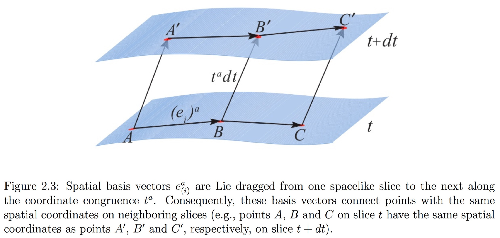
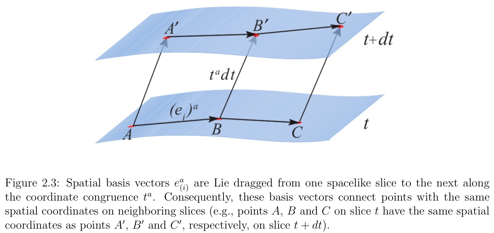
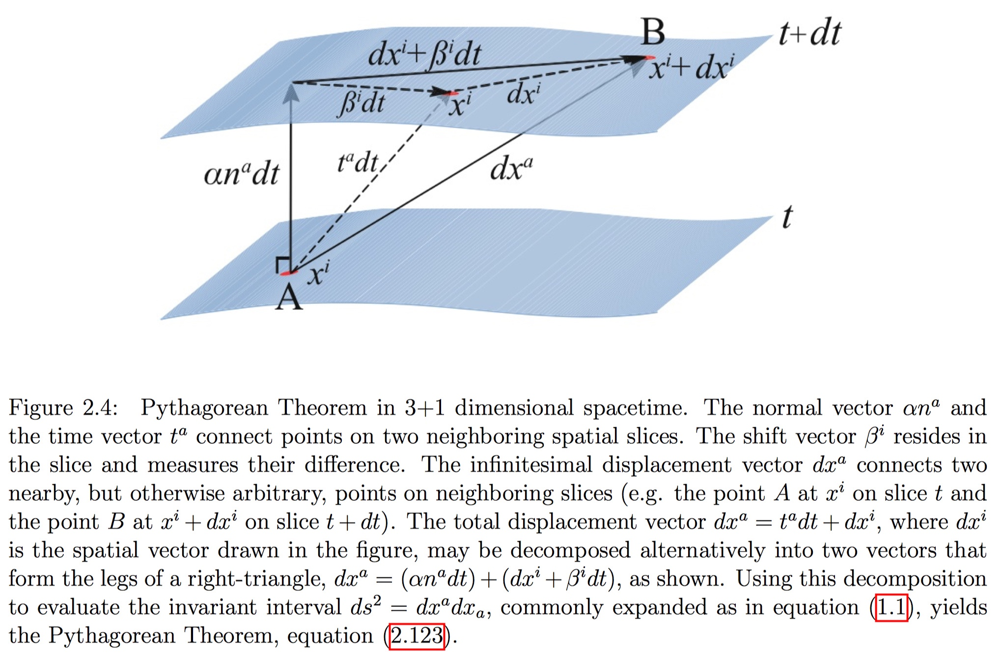
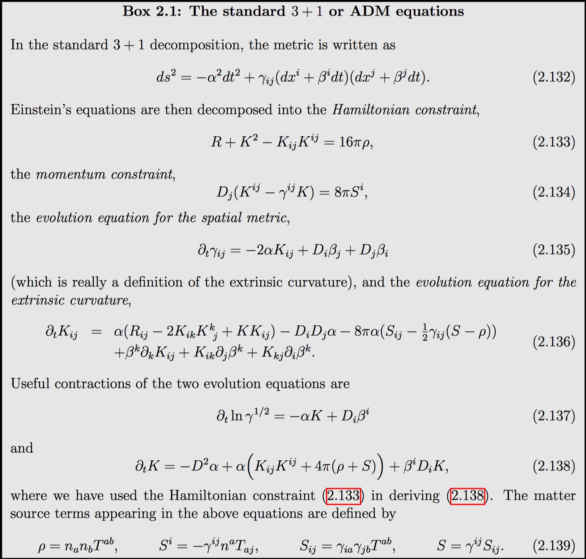

The metric \gamma_{ab} and the extrinsic curvature K_{ab} cannot be chosen arbitrarily. Instead, they have to satisfy certain constraints.
In order to find these relations, we have to relate the three-dimensional Riemann tensor R^a_{\space bcd} of the the hypersurfaces Σ to the four-dimensional Riemann tensor ^{(4)} R^a_{\space bcd} of M. To do so, we first take a completely spatial projection of ^{(4)} R^a_{\space bcd}, then a projection with one index projected in the normal direction, and finally a projection with two indices projected in the normal direction. All other projections vanish identically because of the symmetries of the Riemann tensor. A decomposition of ^{(4)} R^a_{\space bcd} into spatial and normal pieces therefore involves these three different types of projections.
The above projections give rise to the equations of Gauss, Codazzi and Ricci.
Gauss’ equation and Codazzi equations give rise to the “constraint” equations.
Gauss’ equation:
a completely spatial projection.
Codazzi equation:
R^a_{\space bcd} with one index projected in the normal direction.
Constraint equations
We can rewrite Einstein’s field equations in a 3+1 form. Basically, we just need to take the equations of Gauss, Codazzi and Ricci and eliminate the four-dimensional Rieman tensor using Einstein’s equations.
We will first derive the constraint equations from Gauss’ equation and the Codazzi equation.
- Contracting Gauss’ equation:
Note
We now define the energy density ρ to be the total energy density as measured by a normal observer n^a,
- Contracting the Codazzi equation:
Note
We now define S_a to be the momentum density as measured by a normal observer n^a,
They are the conditions that allow a three-dimensional slice Σ with data (\gamma_{ab}, K_{ab}) to be embedded in a four-dimensional manifold M with data g_{ab}. We will discuss strategies for solving the constraint equations and finding initial data that represent a snapshot of the gravitational fields at a certain instant of time.
Constraint equations constrain the fields in space at one instant of time, independently of their past history.
Freedom
The four constraint equations cannot determine all of the gravitational fields (\gamma_{ij}, K_{ij}).
Both \gamma_{ij} and K_{ij} are symmetric, three-dimensional tensors, they together have twelve independent components.
- The four constraint equations can only determine four of these
- Four undetermined functions are related to coordinate choices
- Two independent sets of values for the conjugate pair (\gamma_{ij}, K_{ij}).
- Two dynamical degrees of freedom correspond to the two polarization modes of a gravitational wave
It is quite intuitive that the state of a dynamical field, like a gravitational wave, cannot be determined from constraint equations. Waves satisfy hyperbolic equations, and their state at any time depends on their past history. It is therefore natural that the constraint equations serve to constrain only the “longitudinal” parts of the fields, while the “transverse” parts, related to the dynamical degrees of freedom, remain freely specifiable.
Ideally one would like to separate unambiguously the longitudinal from the transverse parts of the fields at some initial time, freely specifying the latter and then solving the constraints for the former. Given the nonlinear nature of general relativity such a rigorous separation is not possible; instead, all these fields are entangled in the spatial metric and the extrinsic curvature.
Evolution Equations
The evolution equations evolve the data (γ_{ab},K_{ab}) forward in time. However, the Lie derivative along n^a, \mathcal { L } _ { \mathbf { n } }, is not a natural time derivative since n^a is not dual to the surface 1-form Ω_a, i.e. their dot product is not unity
Instead, consider the vector
which is dual to Ω_a for any spatial shift vector β^a,
It will prove useful to choose t^a to be the congruence along which we propagate the spatial coordinate grid from one time slice to the next slice. In other words, t^a will connect points with the same spatial coordinates on neighboring time slices. Then the shift vector β^a will measure the amount by which the spatial coordinates are shifted within a slice with respect to the normal vector. The lapse function α measures how much proper time elapses between neighboring time slices along the normal vector. The lapse and the shift therefore determine how the coordinates evolve in time. The choice of α and β^a is quite arbitrary. The freedom to choose these four gauge functionsα and β^a completely arbitrarily embodies the four-fold coordinate degrees of freedom inherent in general relativity.
The lapse and the shift determine how the coordinates evolve from one time slice Σ to the next, whereas the constraint equations represent integrability conditions which have to be satisfied within each slice. Therefore, the constraints have to be independent of how the coordinates evolve, and the lapse and the shift can enter only the evolution equations.

Observers who are “at rest” relative to the slices follow the normal congruence n^a and are called either normal or Eulerian observers. while observers following the congruence t^a are called coordinate observers. If matter is present it moves entirely independently of the coordinates with four-velocity u^a.
Ricci’s equation:
- The evolution equation for the extrinsic curvature:
Note
a projection with two indices projected in the normal direction.
- The evolution equation for the spatial metric \gamma_{ab}:
Note
It is quite intuitive, though, that things will simplify if we adopt a coordinate system that reflects our 3 + 1 split of spacetime in a natural way. We will see that the Lie derivative in the evolution equations then reduces to a partial derivative with respect to coordinate time and, as an additional benefit, we will be able to ignore all timelike components of spatial tensors.
The coupled evolution equations the extrinsic curvature and the spatial metric determine the evolution of the gravitational field data (\gamma_{ab}, K_{ab}). Together with the constraint equations they are completely equivalent to Einstein’s equations.
Note we have succeeded in recasting Einstein’s equations, which are second order in time in their original form, as a coupled set of partial differential equations that are now first order in time.
So far, we have expressed our equations in a covariant, coordinate independent manner, i.e. the basis vectors e_a have been completely arbitrary and have no particular relationship to the 1-form Ω_a or to the congruence defined by t^a.
ADM Equations
It is quite intuitive, though, that things will simplify if we adopt a coordinate system that effects our 3 + 1 split of spacetime in a natural way.
To do so, we first introduce a basis of three spatial vectors e^a_{(i)}, reside in a particular time slice Σ:
We extend our spatial vectors to other slices Σ by Lie dragging along t^a

As the fourth basis vector we pick e^a_0 = t^a. The duality condition then implies that e^a_{(0)} has the components
This means that the Lie derivative along t^a reduces to a partial derivative with respect to t: \mathcal{L}_t = \partial_t.
Since spatial tensors vanish when contracted with the normal vector, this also means that all components of spatial tensors with a contravariant index equal to zero must vanish.
For the shift vector,
Solving equation t ^ { a } = \alpha n ^ { a } + \beta ^ { a } for n^a then yields the contravariant components
and from the normalization condition n_a n^a = −1 we find
From the definition of the spatial metric we have \gamma_{ij} = g_{ij} meaning that the metric on Σ is just the spatial part of the four-metric. Since zeroth components of spatial contravariant tensors have to vanish, we also have \gamma^{a0} = 0.
The inverse metric can therefore be expressed as:
We can now invert it and find the components of the four-dimensional metric
Equivalently, the line element may be decomposed as:
which is often refered to as the metric in 3 + 1 form. We may interpret this line element as the Pythagorean Theorem for a 4-dimensional spacetime,
This equation thus determines the invariant interval between neighboring points A and B.

Therefore, the entire content of the decomposed Einstein equations is contained in their spatial components alone, and we can rewrite:
- the Hamiltonian constraint:
- the momentum constraint:
- the evolution equation for the extrinsic curvature:
- the evolution equation for the spatial metric:
Equations comprise the “standard” 3 + 1 equations. Sometimes they are referred to as the “ADM” equations.
